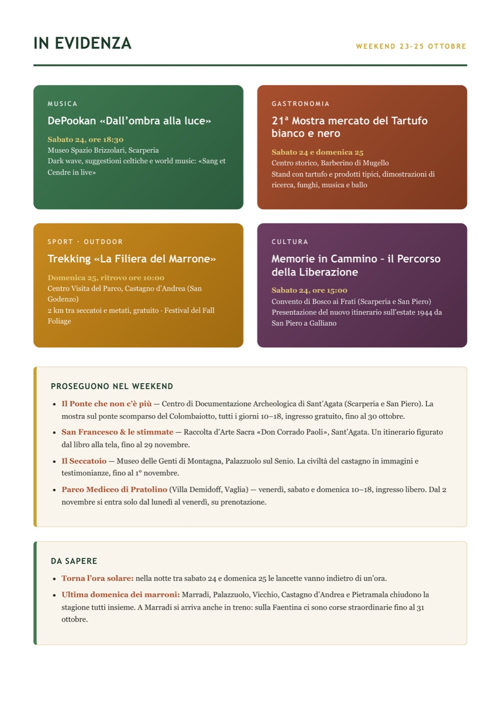
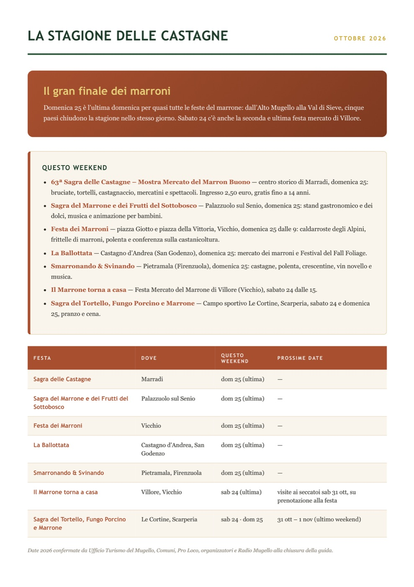
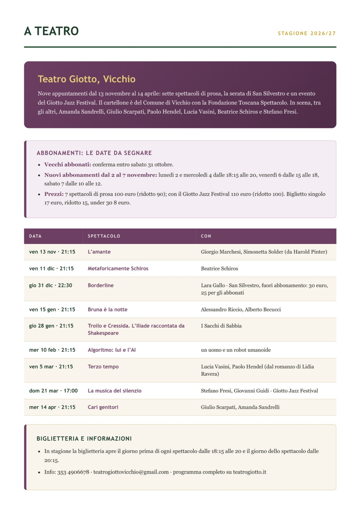
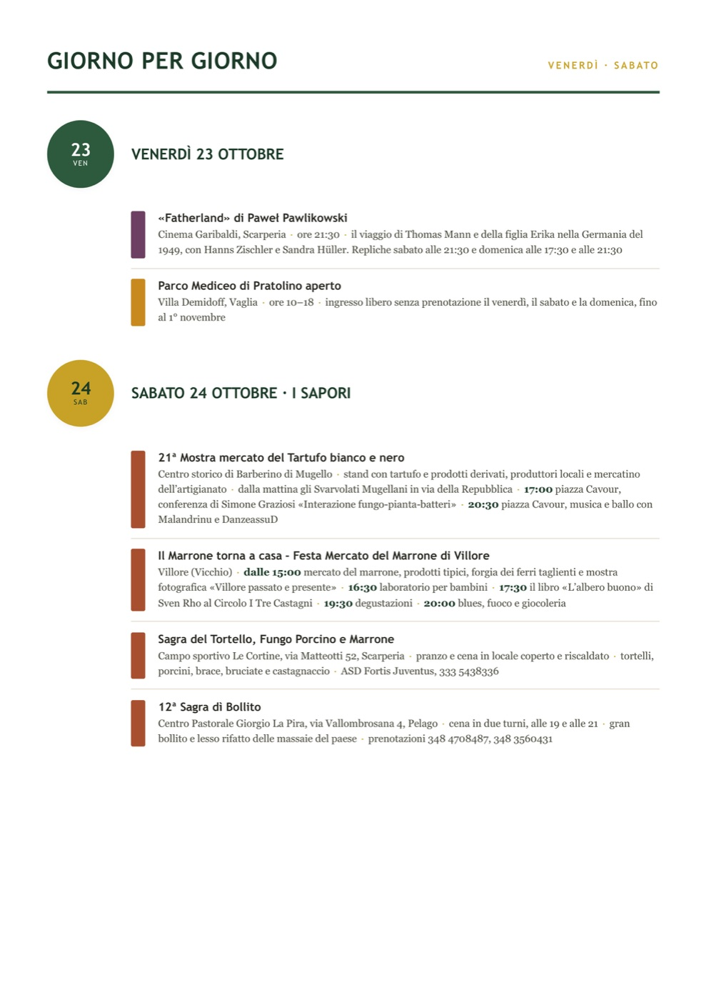
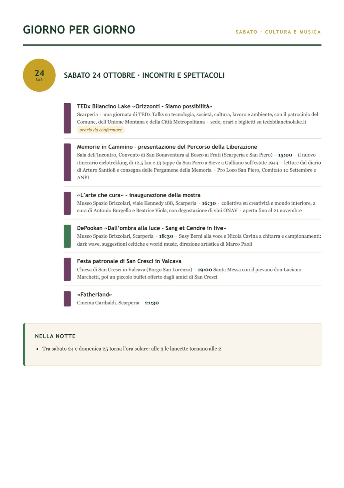
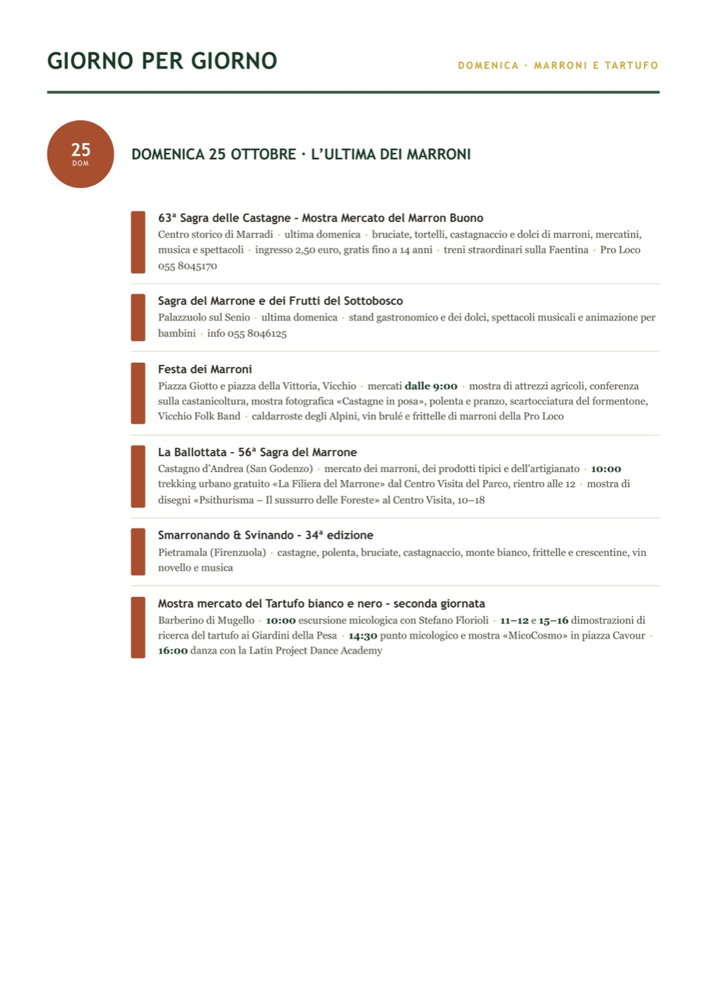
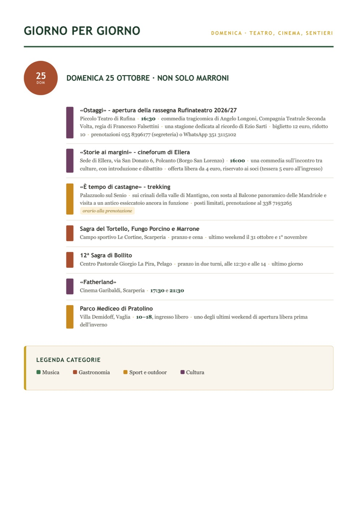
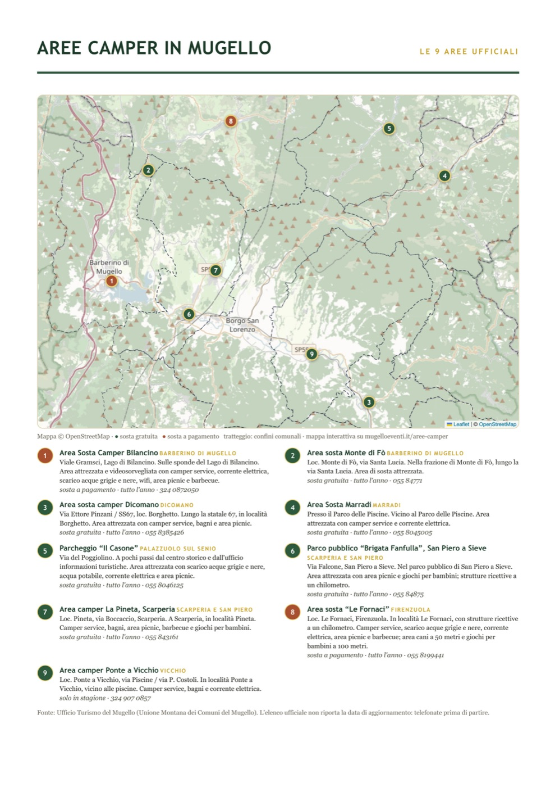
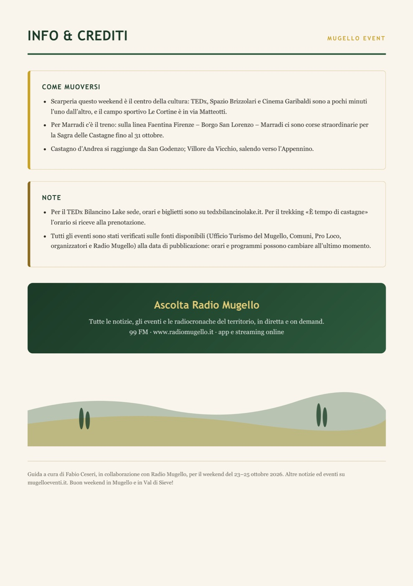

Il tuo evento qui · Vuoi che il tuo evento sia il primo che si vede su Mugello Event? Chiedi lo spazio in evidenza
Weekend 23–25 ottobre 2026
Leggi la guida in versione testo









Dove si trova
Venerdì 23 ottobre
- «Fatherland» (ven, sab e dom)Cinema Garibaldi, ScarperiaApri in Google Maps
- Parco Mediceo di Pratolino aperto (ven, sab e dom)Villa Demidoff, Pratolino, VagliaApri in Google Maps
Sabato 24 ottobre
- Mostra mercato del Tartufo bianco e nero (sab e dom)Piazza Cavour, Barberino di MugelloApri in Google Maps
- Festa Mercato del Marrone di VilloreVillore, VicchioApri in Google Maps
- Sagra del Tortello, Fungo Porcino e Marrone (sab e dom)Campo sportivo Le Cortine, via Matteotti 52, ScarperiaApri in Google Maps
- Sagra dì Bollito (sab e dom)Centro Pastorale Giorgio La Pira, via Vallombrosana 4, PelagoApri in Google Maps
- TEDx Bilancino LakeScarperia (sede su tedxbilancinolake.it)Apri in Google Maps
- Memorie in Cammino – Percorso della LiberazioneConvento di San Bonaventura al Bosco ai FratiApri in Google Maps
- «L'arte che cura» e concerto dei DePookanMuseo Spazio Brizzolari, viale Kennedy 188, ScarperiaApri in Google Maps
- Festa patronale di San Cresci in ValcavaChiesa di San Cresci in Valcava, Borgo San LorenzoApri in Google Maps
Domenica 25 ottobre
- 63ª Sagra delle CastagneCentro storico, MarradiApri in Google Maps
- Sagra del Marrone e dei Frutti del SottoboscoPalazzuolo sul SenioApri in Google Maps
- Festa dei MarroniPiazza Giotto e piazza della Vittoria, VicchioApri in Google Maps
- La Ballottata e trekking «La Filiera del Marrone»Centro Visita del Parco, Castagno d'AndreaApri in Google Maps
- Smarronando & SvinandoPietramala, FirenzuolaApri in Google Maps
- «Ostaggi» – RufinateatroPiccolo Teatro di RufinaApri in Google Maps
- «Storie ai margini» – cineforum di ElleraVia San Donato 6, Polcanto, Borgo San LorenzoApri in Google Maps
- «È tempo di castagne» – trekkingPalazzuolo sul Senio (ritrovo alla prenotazione)Apri in Google Maps
Mostre del weekend
- Il Ponte che non c'è piùCentro di Documentazione Archeologica, Sant'AgataApri in Google Maps
- San Francesco & le stimmateRaccolta d'Arte Sacra, Sant'AgataApri in Google Maps
- Il SeccatoioMuseo delle Genti di Montagna, Palazzuolo sul SenioApri in Google Maps